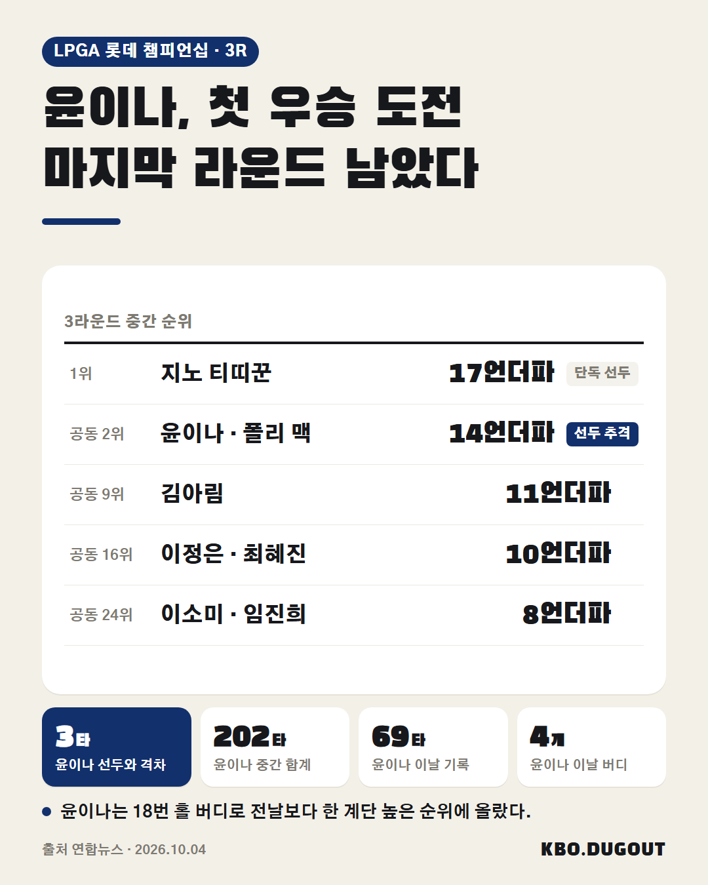
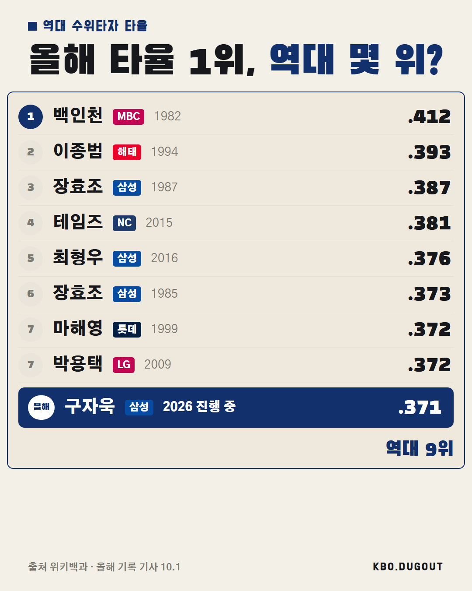
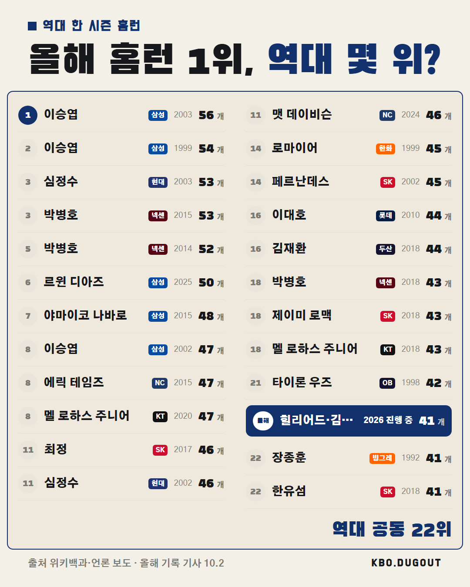

윤이나는 2025년 LPGA 투어에 데뷔한 뒤 아직 우승이 없습니다. 3라운드를 마친 지금 선두 지노 티띠꾼과는 3타 차입니다.
QA 없음
윤이나는 2025년 LPGA 투어에 데뷔한 뒤 아직 우승이 없습니다. 3라운드를 마친 지금 선두 지노 티띠꾼과는 3타 차입니다.
QA 없음

윤이나, LPGA 롯데 챔피언십 3라운드에서 3언더파 69타. 중간 합계 14언더파 202타로 폴리 맥과 공동 2위에 올랐고, 선두 지노 티띠꾼과는 3타 차. 18번 홀 버디로 전날보다 한 계단 올라선 순위 #야구국가대표 #프로야구 #야구 #윤이나
QA 출처와 사실이 다를 수 있음
최원준과 빅터 레이예스가 195안타로 최다안타 공동 1위입니다. 두 타자가 동시에 시즌 200안타에 도전하는 것은 처음입니다.
QA 없음

현재 타율 1위 구자욱, 역대 9위. 역대 몇 위까지 갈 수 있을까? 출처: 위키백과 (위키백과 CC BY-SA) · 올해 기록 기사 10.1
QA 없음

현재 타점 1위 힐리어드, 신기록까지 24타점. 신기록 깰 수 있을까? 출처: 위키백과 (위키백과 CC BY-SA) · 올해 기록 운영자 입력
QA 없음

올해 홈런 1위 힐리어드·김도영, 41개로 역대 공동 22위. 역대 몇 위까지 갈 수 있을까? 출처: 위키백과·언론 보도 (위키백과 CC BY-SA) · 올해 기록 기사 10.2
QA 없음